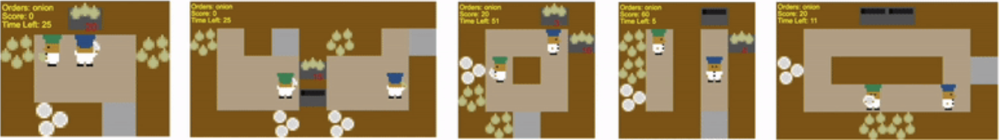

MultiNet
MultiNet
MultiNet v1.0: A Comprehensive Benchmark for Evaluating Vision-Language-Action Models Across Diverse Domains

MultiNet v1.0 provides a comprehensive benchmark suite for evaluating state-of-the-art Vision-Language-Action models across diverse domains including robotics, gameplay, and multimodal understanding tasks.
Motivation
Vision language & Action models hold immense promise as general-purpose agents capable of understanding visual scenes, processing natural language instructions, and executing appropriate actions across a variety of domains. However, the current evaluation landscape remains fragmented, with domain-specific benchmarks that fail to capture the true generalization capabilities these models claim to possess. This critical gap in comprehensive evaluation prevents us from understanding where these sophisticated systems truly excel and where they catastrophically fail.
MultiNet's mission is to bridge this evaluation gap by providing a unified framework that reveals the genuine strengths and limitations of multimodal AI systems. By systematically evaluating models across continuous control, discrete actions, and multimodal reasoning tasks, we aim to provide the research community with the insights needed to build more robust and truly generalizable AI systems.
Abstract
The rapid advancement of multimodal AI systems has created an urgent need for comprehensive evaluation frameworks that can assess diverse model capabilities across multiple domains and tasks. We introduce MultiNet v1.0, a unified benchmark suite that systematically evaluates state-of-the-art Vision-Language Models (VLMs), Vision-Language-Action (VLA) models, and generalist models to provide holistic performance insights across robotics, multi-agent gameplay, and multimodal reasoning tasks. Our evaluation suite spans 11 datasets and includes models such as GPT-5, Pi0, and Magma - all state-of-the-art models in their respective categories.
Key contributions of MultiNet v1.0 include:
- Comprehensive Domain Coverage: Evaluation across robotics, gameplay, commonsense reasoning, spatial reasoning, visual question answering, and visual understanding tasks. We believe that the capabilities required to perform well on these tasks are important for a truly generalist model or system to possess.
- Standardized Evaluation Protocols: Unified metrics and evaluation procedures for fair comparison across different model architectures
- Model Adaptation Framework: Open-source code for adapting diverse models to various out-of-distribution task domains
- Extensive Analysis: In-depth analysis of model capabilities, failure modes, and architectural trade-offs
- Open-Source Toolkit: Complete evaluation harness and benchmarking tools for the research community
Dataset Coverage
MultiNet v1.0 provides comprehensive evaluation across six major domains, encompassing 11 diverse datasets that test different aspects of multimodal AI capabilities. Each dataset presents unique challenges in vision-language-action understanding, from robotic manipulation to complex reasoning tasks.
| OpenX | Overcooked | PIQA | ODINW | SQA3D | BFCL | |
|---|---|---|---|---|---|---|
| Dataset |  | |||||
| Description | Large-scale robotics dataset with diverse manipulation and locomotion tasks across multiple robot embodiments and environments | Cooperative cooking simulation requiring coordination, planning, and multi-agent interaction in kitchen environments | Physical interaction question answering dataset testing common-sense reasoning about object properties and interactions | Object detection dataset with diverse domains testing visual recognition across varied contexts and object categories in the wild | 3D scene understanding dataset combining spatial reasoning with question answering in complex indoor environments | Berkeley function calling dataset for evaluating multi-turn conversational function calling capabilities |
| Domain | Robotics | Gameplay | Physical Commonsense Reasoning | Object detection | 3D Spatial Reasoning | Function Calling |
Tip: Hover over images to zoom, or click to view full-size in lightbox
Evaluation Methodology and Metrics
MultiNet v1.0 employs standardized evaluation metrics tailored to each task category, ensuring comprehensive and fair assessment across diverse model architectures. Our evaluation framework adapts metrics to the unique characteristics of each domain while maintaining consistency for cross-domain comparisons:
Results
Our comprehensive evaluation across diverse domains reveals significant insights into model performance and capabilities. Below we present detailed results of all model performances on our evaluation suite.
Model Performance Leaderboard
Comprehensive evaluation across 7 benchmark tasks.
Task Groups:
Metrics:
Visual Indicators:
Notes:
Model Output Comparison
Compare how different models respond to the same visual input from the ODinW selfdrivingCar dataset
Input
What object is shown in this image from the selfdrivingCar dataset?
Option 0: biker Option 1: car ...
Output the number (0-10) of the correct option only.
Model
Output
Pi0's prediction space collapse visualized
Pi0 experiences prediction space collapse on the Overcooked dataset, centered around the action 24, which maps to (Player 1: STAY, Player 2: NORTH)
Frequency of predicted action classes for Pi0 model on Overcooked dataset
Key Findings and Analysis
MultiNet v1.0 reveals catastrophic failure at the boundaries of vision-language-action models. No current model achieves true cross-domain generalization Pi0 performance drops to 0% on basic vision-language tasks, while GPT-5 achieves <1% success on certain continuous control tasks despite strong VL capabilities.
Fine-tuning for robotics seems to systematically corrupt vision language models (Pi0's repetitive "increa" token spam).
Magma - the generalist model produces co-ordinates instead of text answers.
Prompt engineering seems to provide only marginal gains (~20% improvement) that cannot bridge fundamental architectural incompatibilities.
These results demonstrate that current training paradigms create overspecialized models with incompatible domain-specific biases, requiring fundamental rethinking of modular architectures and progressive training strategies for truly unified multimodal systems. For detailed results, analysis, and methodology, please refer to our comprehensive technical report.
Looking Forward
Immediate Next Research Directions
Building on MultiNet v1.0's findings of catastrophic failure at domain boundaries, our immediate research priorities focus on understanding and mitigating the fundamental limitations of current vision-language & action models. These investigations target the core mechanisms behind knowledge degradation, architectural incompatibilities, and the emergence of failure modes that prevent true cross-domain generalization.
Investigating the Gibberish Outputs of VLAs
- Token degradation analysis: Examine how fine-tuning on action sequences corrupts language generation pathways, particularly the emergence of repetitive tokens like Pi0's "increa" spam
- Mitigation strategies: Develop strategies to mitigate the degradation of language generation pathways despite end-to-end fine-tuning on entirely new data distributions
Investigating SoM/ToM Outputs of Magma
- Coordinate-text mapping errors: Investigate why Magma produces spatial coordinates instead of natural language responses when prompted with inputs of completely different domains, revealing fundamental misalignment in output modalities
- Output modality alignment: Develop fine-tuning/training techniques and architectural modifications to ensure proper alignment between input domains and output modalities, preventing cross-modal contamination in multi-task models
Pi0.5 - SoTA Knowledge-Insulated VLA Performance on v1.0
- Architectural improvements: Evaluate next-generation knowledge insulation techniques in Pi0.5 against MultiNet v1's comprehensive benchmark suite
- Domain transfer efficiency: Measure how effectively Pi0.5 maintains performance across vision-language tasks while adapting to robotic control
- Failure mode comparison: Contrast Pi0.5's failure patterns with previous Vision-Language-Action models to validate architectural advances in preventing catastrophic forgetting
Knowledge Insulation Testing and Experiments
- Modular architecture evaluation: Test compartmentalized model designs that isolate domain-specific knowledge while maintaining shared representations for common reasoning tasks
- Progressive fine-tuning protocols: Investigate learning approaches that gradually introduce new domains without corrupting existing capabilities
Long-term Goals
Our long-term vision extends beyond addressing current limitations to fundamentally reimagining how we evaluate, understand, and build multimodal action models. These goals represent paradigm shifts toward more robust, adaptive, and truly general AI systems that can seamlessly operate across diverse domains while maintaining coherent reasoning capabilities.
Live Benchmarks
- Dynamic evaluation frameworks: Develop continuously updating benchmarks that adapt to model capabilities, preventing overfitting to static test sets
- Real-time performance monitoring: Create systems for ongoing assessment of deployed VLAs across diverse real-world scenarios
- Community-driven evaluation: Build platforms for researchers to contribute new tasks and domains, ensuring benchmark relevance as the field evolves
World Models as Evaluators
- Causal reasoning assessment: Build and leverage world models to evaluate whether multimodal systems of the future understand causal relationships rather than just statistical correlations
- Counterfactual analysis: Deploy world models to test the robustness of multimodal systems through systematic perturbation of environmental conditions and task parameters
Building the Next Generation of Multimodal Action Models
- Unified architecture design: Develop foundational architectures that natively support multiple modalities without domain-specific fine-tuning degradation
- Compositional reasoning systems: Create models that can decompose complex tasks into modular components, enabling flexible recombination across domains
- Meta-learning for rapid adaptation: Build systems that can quickly acquire new capabilities while preserving existing knowledge, moving beyond current catastrophic forgetting limitations
Citation
@misc{guruprasad2025multinetv1,
title={MultiNet v1.0: A Comprehensive Benchmark for Evaluating Vision-Language-Action Models Across Diverse Domains},
author={Pranav Guruprasad and Yangyue Wang and Sudipta Chowdhury and Harshvardhan Sikka and Paul Pu Liang},
year={2025},
eprint={2505.05540},
archivePrefix={arXiv},
primaryClass={cs.AI},
url={https://arxiv.org/abs/2505.05540},
note={MultiNet v1.0 Technical Report}
}